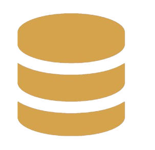
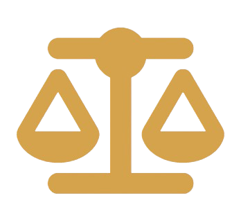
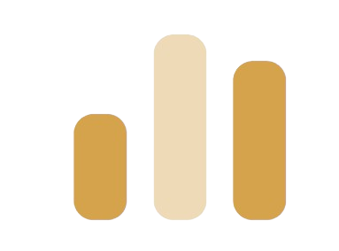

Organize sua
mineração e
entenda os
impostos da Coroa
O problema histórico
Durante o ciclo do ouro em Minas Gerais, os mineradores enfrentavam altos impostos, como o Quinto, a Capitação e a Derrama, que reduziam seus lucros e geravam insegurança e divídas.
Nossa proposta
O MinasJustas é uma plataforma que leva a tecnologia para o Brasil Colônia, ajudando o minerador a ter mais controle e planejamento da sua produção.

Controle da produção
Organize a quantidade de ouro extraída

Cálculo de impostos
Entenda quanto será cobrado pela Coroa.

Planejamento Financeiro
Tenha uma visão clara dos seus ganhos.